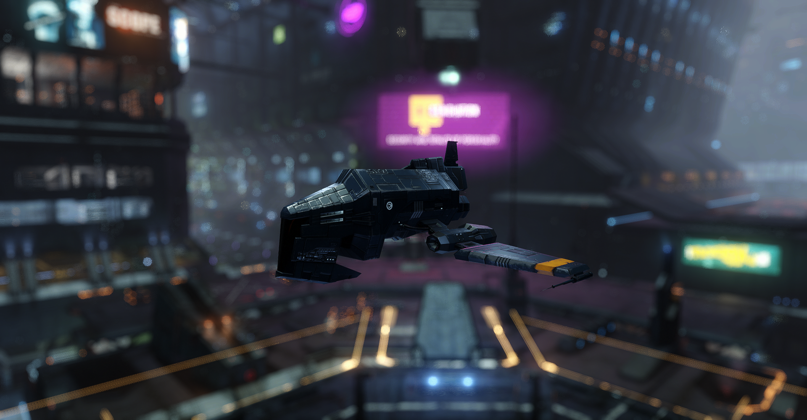
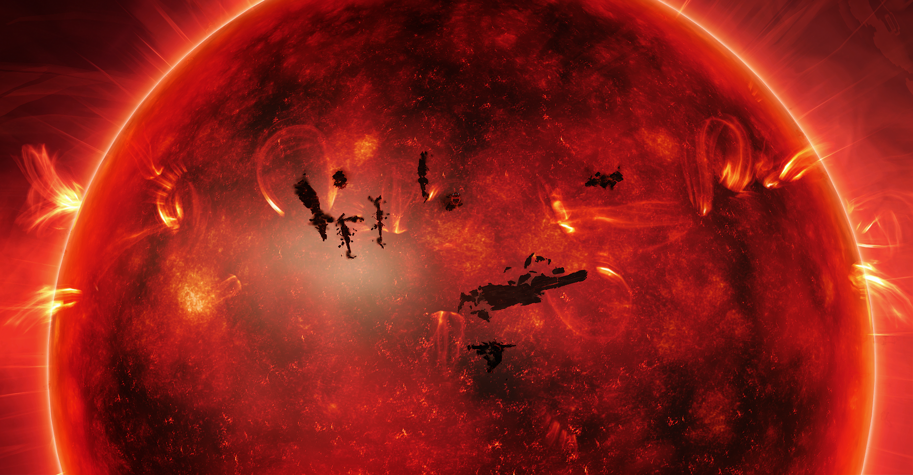
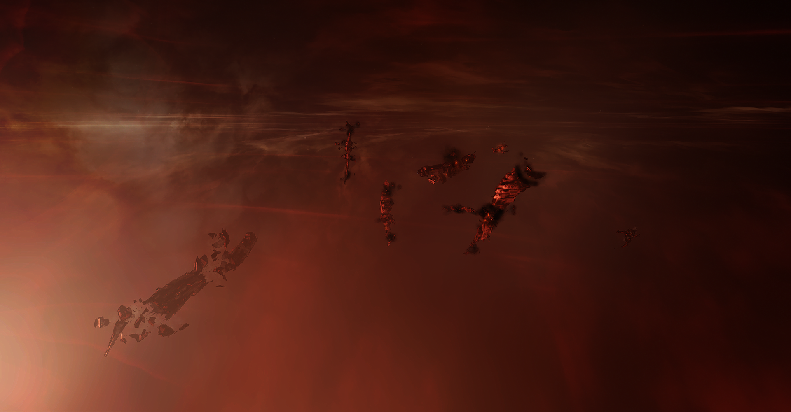
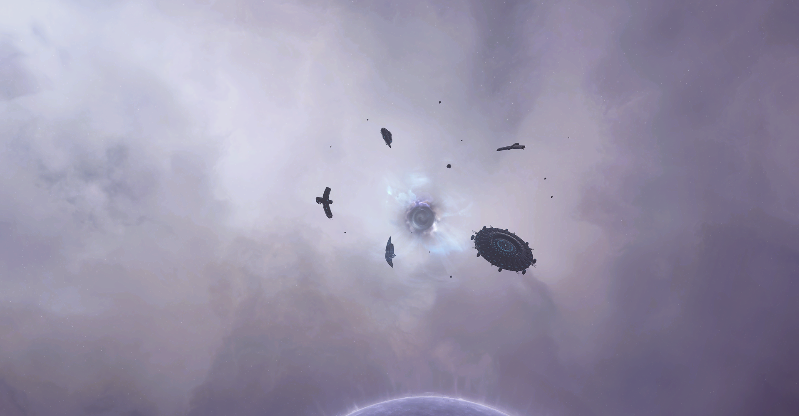
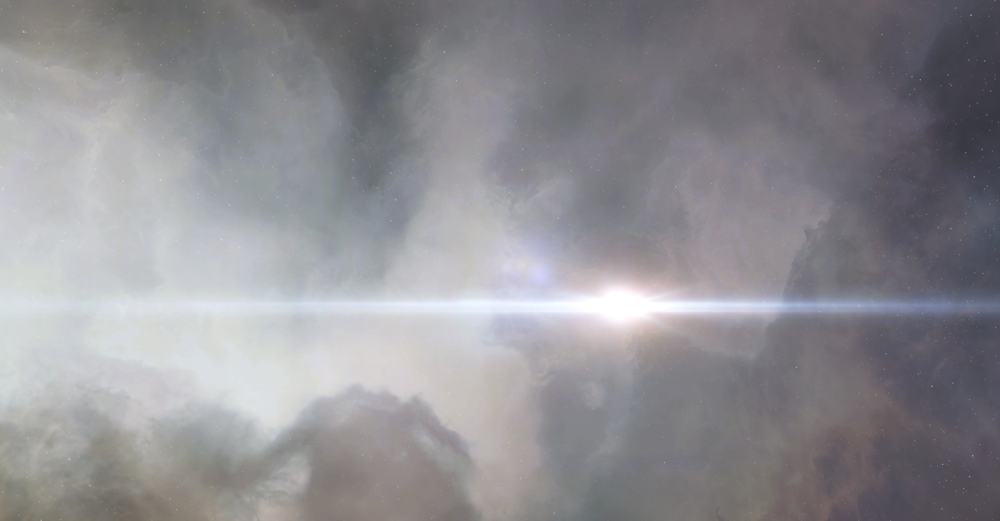

Docking bay 2K30606R
Jita 4-4, Jita, Kimotoro, The Forge
The beating heart of New Eden.
This is where the voyage begins.
Editor's note:
On the left, you will follow the journal of a voyager, taken during the Sightseeing on the path of Katia Sae, Mild Thrill Experience.
On the right, you will follow the host for the Sightseeing on the Path of Katia Sae, Extreme Thrill Experience, Taivi Ranurgeir.
Homeworld: Osaumuni V
Her favourite stop: Thera
Born in the temperate landscape of Osaumuni V, she soon proved to be a gifted and curious girl. She moved to Rens to pursue Stellar physic at the University of Rens III before moving on to specialize in Wormhole physic.
After graduating, she was visiting researcher at The Sanctuary, the research branch of the Sisters of EvE where she continued her studies on wormholes. With a few stays in Thera under her belt and a deep knowledge on wormholes, she is the most suited to guide our guests through the depths of Anoikis in the Extreme Thrill Experience.
The shuttle sat silently on its berth. The hull was a Caldari standard design, but it had been modified by Sawa Laboratories crews to provide a better view from the passengers’ compartment with floor to ceiling viewports, extra comfort seats and advanced projector technology. The livery was dark but for a pair of orange stripes, inconspicuous and simple.
The crew was preparing it for the upcoming trip. The last supplies were loaded and the cleaning crews left the ship interiors in pristine conditions. Everything was ready to welcome the guests aboard.
The Voyage could begin.
System: Jita
Constellation: Kimotoro
Region: The Forge
Security Status: 0.9
This is the last one, you heard me?! One last thrill so my spirit can be happy I did them all but then I want a long boring vacation on Alentene III, okay?
I’m once again boarding a New Eden Voyages shuttle, this time the NEV Voyager III. I just hope the “III” doesn’t mean the two before mine had died. This time, however, we are diving into wormhole space, also known as Anoikis. And I’m frightened for real this time.
You know, Null Sec is known, dangerous but known. Wormhole space is like… all unknown. You enter these systems hanging somewhere, just there… nothing around you but the lone star system… All kinds of dangerous thingies can lurk there!
But it’s not like I can step back now. I’m a Voyager! I’ll see the end of this… with trembling legs.
And we are on our way! The Voyage has officially began!
"Welcome everyone! New Eden Voyages is happy to welcome you on board the NEV Voyager III."
"My name is Taivi and I'll be your host for this voyage. Be ready to be amazed and have an experience that you won't forget!"
"We are preparing to leave Jita 4-4 and we will be soon on our way. While we wait, I and the whole crew would like to wish you a pleasant stay."
"If you have any question or concern, please reach out to our staff, we will be happy to help."

Once everyone was on board and the ship was sealed, the shuttle began its undocking operations. It slowly rose from its berth before it headed for the busy access corridor. The movements were smooth and the guests barely felt the change of vibrations under their feet.
Refreshments were distributed but not so many gasped and turned in awe as they exited the massive station. This voyage was for the people that had seen Jita 4-4 before, the gasps and thrills laid ahead of them. Nonetheless, the shuttle was right in the thick of the crowded space around Jita 4-4: massive ships, from cargo to battle ones, loomed as it sped away, heading for the Perimeter gate.
The shuttle headed for Uitra, only a smatter of jumps from Jita, and once there, it headed for a spot in deep space. Then and only then, once everyone had taken a deep breath, the shuttle activated the filament that catapulted it into Triglavian space.
System:
Constellation:
Region: Pochven
Security Status: -1.0
Red… red everywhere… I heard of triglavian systems and I did see some pictures but pictures don't let the full feeling pass through. It feels like you’re in the red… swimming in an endless sea of red.
I would say Blood Raiders should feel at home in this place… and the star is… burning bloody!
The Birthday Bash is… a graveyard, right before the sun. There are a few massive dreadnoughts and that’s mostly it. It is smaller than other graveyards we visited but I think, as before, what matters is the story behind it, rather than the wrecks themselves.
Capsuleers, god and all, and yet they can die. It makes me remember the monument in Molea.
Next stop Thera!
"Dear guests, we just entered the Tunudan system and we are en route to the Birthday Bash."
"The Birthday Bash, a one of a kind Birthday celebration. In YC122, a dying capsuleer called for one last celebration of life: he wanted to have one last rodeo before leaving the shores of New Eden."
"He didn’t need to move: capsuleers from all over the cluster came to Tunudan and a gargantuan clash ensued."
"A monument to life, built on the wrecks of death."


Once the guests could be amazed by the fiery red star in the background, the shuttle headed for one of the occupied stations. It sat in silence in its docking bay. No ground crew came to service the ships and the guests were left to observe the Triglavian banners hanging in the place where Caldari banners and corporations’ advertisements hang.
Refreshments were served with appetizers that spoke of what had happened to Tunudan, calling to the cuisine of old, and to what was now the system, pushing into a triangular experiment of cuisine.
The waiting was soon over, the shuttle lifted from its berth and headed for the outside once again. It reached a spot in the depths of the system and there it sat. Everyone took a deep breath before the shuttle activated the filament and they were catapulted back into known space.
System: Thera
Constellation: None
Region: Anoikis
Security Status: -1.0
It's a somewhat dizzying experience using those filaments. One moment you’re here, the other you’re on a completely different spot. Like, I know that wormholes are the same, but they don’t feel… just as dizzying?
Wormholes are scary, that they are. These systems hanging somewhere nowhere… let’s hope to not fall through. But somewhat… mesmerizing as well? They swirl and twitch slowly, hanging there, in space. They hint of what you might find on the other side and yet they remain secretive of what truly lies on the other side. The only way to know is to go all in…
Thera. It’s… massive, Taivi said 342 AU which she said it’s a lot. And it’s unique. Okay, I know, I said unique a lot of times during these trips but how can I say it differently? I haven’t seen anything like Thera before.
It has a soft, pearl like background disappearing into the darkness with a fiery star in the center. The Epicenter is this small wormhole like thingy surrounded by other thingies that are like alien thingies? It’s not human architecture that’s for sure. Apparently, we don’t know much on Epicenters. Is there something we know about for sure out here?!
Next stop Redoubt!
"Dear guests, we just entered the Thera system and we are en route to the Epicenter."
"Thera, the crossroad of Anoikis. It had gained such a name due the presence of multiple wormholes connecting it to the four corners of New Eden, making it a crossroad between Anoikis systems and known space systems."
"Catalogued as a Shattered Wormhole system, it had been colonized by the Sisters of EVE which maintain four stations, also called Sanctuaries."
"The Epicenter is an anomaly characteristic of shattered wormhole system. Spotted in all known shattered systems, it is a melding of Talocan and Sleeper constructs and components. However its origin, history or purpose is unknown."


The shuttle stopped at one of the Sanctuaries for a moment of rest: a small meal was served. The starred Chef played on the nature of wormholes, shifting, unknown, one you had to try to know, and the cuisine sought to be the same, unknown till you tried it.
Once the meal was done and the guests had rested, they headed out, into wormhole space! The path led them into wormhole after wormhole, seeing bright stars and forgotten stations. The awe was for the natural sights more just as the thrill of danger ran each and every time they dived into the unknown.
At long last, they finally entered Redoubt.
System: Redoubt
Constellation: None
Region: Anoikis
Security Status: -1.0
It’s like falling each and every time, again and again. I take a breath as we face a new wormhole… hold it… and I feel like I fall through as we pop into another wormhole system.
Now, on Redoubt, it’s a sight. It’s different, Taivi said it’s a “shattered system”, a particular kind of wormhole compared to the ones we went through, but it’s a sight nonetheless.
The Sisters of EvE flotilla is majestic: these white ships moving slowly on the fiery background of a burning Wolf-Rayet star.
And if Taivi knows what they are doing in the flotilla she is tight lipped. She smiled at my question and told me it’s top secret and that she doesn’t know. I doubt it. She had a light in her eyes… oh well.
Next stop Jita!
"Dear guests, we just entered the Redoubt system and we are en route to the Sisters of Eve Flotilla."
"The Sisters of Eve had reached where few had reached. There are five known Drifter wormholes, Redoubt is one of them. In each and every one, the Sisters of EVE deployed a fleet to further their own objectives."
"We don’t know what their reasons, purposes, topics of research are but we know they are here, in one of the furthest reaches of space. A majestic sight on the dark tapestry of wormhole space."
The shuttle was relatively safe close to the flotilla, and it took a moment before heading into the unknown once again! Wormhole after wormhole, the space around them swirled, twisted, blinked and without even knowing it, they were back into known space. Just like that. Anoikis was behind them, hidden behind the liquid, swirling pool of the wormhole.
Many breathed easier now. Wormhole space was a different kind of space. You knew what you could find in Null Security space, but in Anoikis, there really was no telling on what could appear from the emptiness of space or what could lay in wait on the other side of a wormhole.
With the end of the voyage on the horizon, the shuttle turned toward the Isanamo gate and forward it went. The closer the shuttle got to Jita, the greater the traffic become. The waits at the gates lengthened but also came the realisation that their voyage was soon to end. Jita 4-4 appeared on the horizon and that was their arrival station.
System: Jita
Constellation: Kimotoro
Region: The Forge
Security Status: 0.9
And… that’s it. I did them all! All four! Yeeeeee!
Now my spirit is satisfied. I did them all, I can go have a relaxing and very boring vacation somewhere safe.
Anoikis space is… different. They are so far away and so difficult to reach that the rules we take for granted in known space don’t work. Yet, they have a beauty to it, a dangerous one, but no less a beauty.
The enemies are also different, capsuleers but those aliens as well, the Sleepers, as they are called. And apparently more could be lurking into the depths of space between spaces.
If I ever get the itch to retreat in meditation away from everyone, I’m totally going to pick a wormhole system! Just remote enough!
As I’m already looking into a relaxing retreat somewhere, this is the end. It was… quite an experience. They all were. I think New Eden Voyages did quite a good job with these and hey, they brought me alive from both null security space and wormhole space, that makes it for a great job!
Will I do it again? Probably so, but now, where are the white, boring sand beaches?!
Until then,
see you.
~The Voyager
"Dear guests, we are nearing Jita 4-4. As you can see, the traffic around the greatest station of the whole cluster is thick. Jita 4-4 is renowed as the main market hub and, as such, it attracts people from all over New Eden."
"In its corridor, you will be able to find the most faithful of Amarrian side by side with the flashiest Gallente. Caldari business man trading with Minmatar clan representatives and through it all, the capsuleers, immortals in a mortal world. Not for nothing, Jita 4-4 is sometimes called the beating heart of New Eden."
"As we enter the station itself, I am sad to announce that we are at the end of our Voyage. We hope you had a pleasant Voyage and New Eden Voyages hopes to see you again soon."
"If you need more information on The Sightseeing on the path of Katia Sae or other offerings by New Eden Voyages, please, reach out to our ground staff. They will be happy to answer each and every one of your questions."
"I’m your host, Cetlyn, and I wish you a safe continuation of your journey."
~The Host, Taivi Ranurgeir